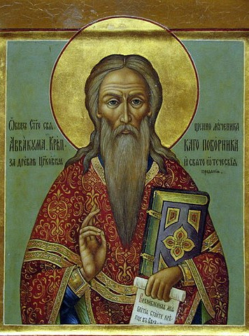
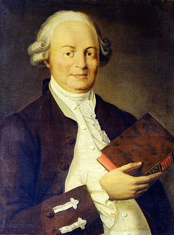
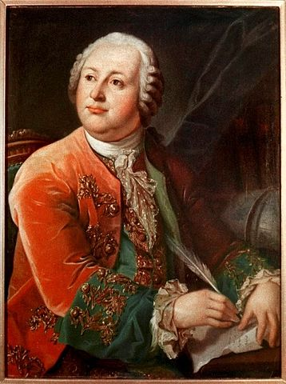
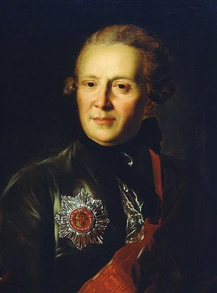
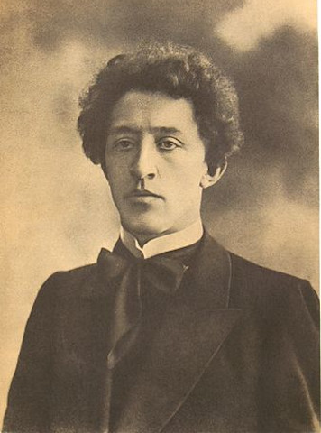
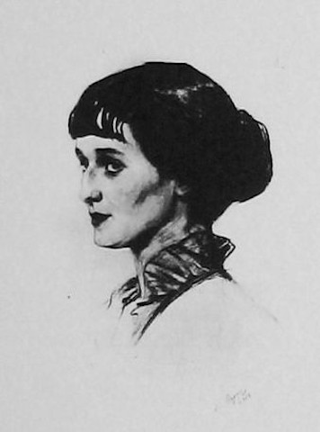
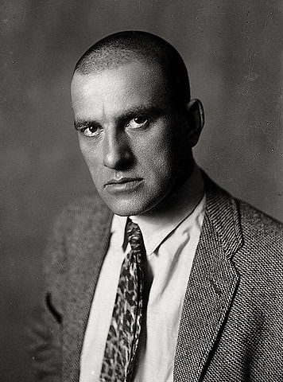
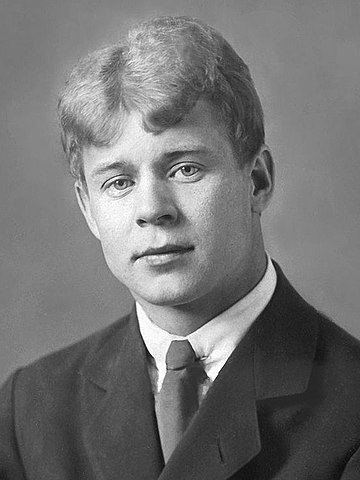
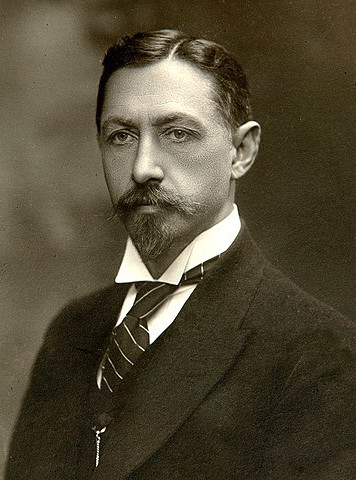
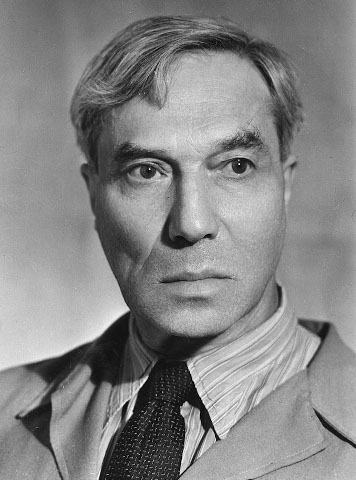

Crash-course of Russian literature of the Romanovs age
There were many attempt of periodization of Russian literature. But everyone agrees that modern literature starts in 18th century. The reign of the Romanov dynasty began in the 17th century, at the end of so called "early period" of Russian literature
Early period
17th century (Michael I, Alexis I, Feodor III, Ivan V and early Peter the Great)
Russian literature of that period had an overwhelmingly religious character and used an adapted form of the Church Slavonic language with many South Slavic elements. The first work in colloquial Russian, the autobiography of the protopope Avvakum, emerged only in 1672. At the begining of Romanovs reign first higher school establishment was organized in Moscow (1685-1687). It was The Slavic Greek Latin Academy. This was the beginning of the further development of secular literature
Prominent figures:

Protopope Avvakum
Avvakum Petrov (1621-1682) — Russian protopope of the Kazan Cathedral on Red Square who led the opposition to Patriarch Nikon's reforms of the Russian Orthodox Church. His autobiography and letters to the tsar, Boyarynya Morozova, and other Old Believers are considered masterpieces of 17th-century Russian literature
Symeon Polotsky (1629-1680) — poet, dramatist, churchman, and enlightener who laid the groundwork for the development of modern Russian literature
Sylvester Medvedev (1641-1691) — court poet, historiographer, philosopher (student of Simeon Polotsky). He elaborated the charter of the Slavic Greek Latin Academy in 1682
Karion Istomin (1640-1718) — Russian poet, translator, and one of the first Muscovite enlighteners (student of Simeon Polotsky)
18th century
Peter the Great, Anna Ioannovna, Elizabeth Petrovna, Catherine the Great
Prominent figures:

Vasily Trediakovsky

Mikhail Lomonosov

Alexander Sumarokov
Vasily Trediakovsky (1703-1769) — Russian literary theoretician and poet whose writings contributed to the classical foundations of Russian literature. One of the founders of syllabo-tonic versification in Russia. He was the first to introduce a hexameter into the arsenal of Russian poetic sizes. For the first time in the Russian language and literature, he theoretically separated poetry and prose and introduced these concepts into Russian culture and public consciousness
Antiochus Kantemir (1708-1744) — a noted intellectual and a close friend of Montesquieu and Voltaire. Considered the father of Russian poetry
Mikhail Lomonosov (1711-1765) — Russian polymath, scientist and writer, who made important contributions to literature, education, and science. In 1755 Lomonosov wrote a grammar that reformed the Russian literary language by combining Old Church Slavonic with the vernacular tongue. In 1755, Lomonosov joined his patron Count Ivan Shuvalov in founding Moscow University
Alexander Sumarokov (1717-1777) — Russian poet and playwright who single-handedly created classical theatre in Russia. Considered the first professional Russian writer
Ivan Barkov (1732-1768) — Russian poet, the author of erotic "Shameful Odes". He was a student of Mikhail Lomonosov, whose works he frequently parodied
Gavrila Derzhavin (1743-1816) — one of the most highly esteemed Russian poets before Alexander Pushkin, as well as a statesman
Denis Fonvizin (1745-1792) — a playwright and writer of the Russian Enlightenment, one of the founders of literary comedy in Russia. His main works are two satirical comedies, one of them "Young ignoramus", which mock contemporary Russian gentry and are still staged today
Alexander Radishchev (1749-1802) — Russian author and social critic who was arrested and exiled under Catherine the Great. He brought the tradition of radicalism in Russian literature to prominence with his 1790 novel Journey from St. Petersburg to Moscow. His depiction of socio-economic conditions in Russia resulted in his exile to Siberia until 1797
Nikolay Karamzin (1766-1826) — Russian Imperial historian, romantic writer, poet and critic. He is best remembered for his fundamental History of the Russian State, a 12-volume national history
Ivan Krylov (1769-1844) — Russia's best-known fabulist. He is sometimes referred to as "the Russian La Fontaine" because, though he was not the first of the Russian fabulists, he became the foremost
19th century (Golden age)
Alexander I, Nicolas I, Alexander II, Alexander III
Prominent figures:
Alexander Pushkin
Nikolai Gogol
Mikhail Lermontov
Ivan Turgenev
Fyodor Dostoevsky
Leo Tolstoy
Anton Chekhov
Vasily Zhukovsky (1783-1852) — the foremost Russian poet of the 1810s and a leading figure in Russian literature in the first half of the 19th century. He held a high position at the Romanov court as tutor to the Grand Duchess Alexandra Feodorovna and later to her son, the future Tsar-Liberator Alexander II
Konstantin Batyushkov (1787-1855) — Russian poet, essayist and translator of the Romantic era. He also served in the diplomatic corps, spending an extended period in 1818 and 1819 as a secretary to the Russian diplomatic mission at Naples
Sergey Aksakov (1791-1859) — Russian literary figure remembered for his semi-autobiographical tales of family life, as well as his books on hunting and fishing
Pyotr Vyazemsky (1792-1878) — Russian poet, literary critic, historian, translator, publicist, memoirist, statesman. Co-founder and first chairman of the Imperial Russian Historical Society (1866), full member of the Russian Academy (1839), ordinary member of the Imperial St. Petersburg Academy of Sciences (1841). A close friend of Pushkin
Alexander Griboyedov (1795-1829) — Russian diplomat, playwright, poet, and composer. He is recognized as "homo unius libri", a writer of one book, whose fame rests on the verse comedy Woe from Wit or The Woes of Wit.
Alexander Pushkin (1799-1837) — Russian poet, playwright, and novelist of the Romantic era who is considered by many to be the greatest Russian poet and the founder of modern Russian literature. Pushkin was fatally wounded in a duel with his brother-in-law, Georges-Charles de Heeckeren d'Anthès, also known as Dantes-Gekkern, a French officer serving with the Chevalier Guard Regiment, who attempted to seduce the poet's wife, Natalia Pushkina
Nikolai Gogol (1809-1852) — Russian novelist, short story writer and playwright recognized as one of the classics of Russian literature. Gogol became the founder of the literary direction of the "Natural School" of the 1840s and had a huge influence on Russian and world literature. Gogol's influence was ackowledged by Mikhail Bulgakov, Fyodor Dostoevsky, Ryūnosuke Akutagawa, Flannery O'Connor, Franz Kafka and others
Alexander Herzen (1812-1870) — Russian writer and thinker known as the "father of Russian socialism" and one of the main fathers of agrarian populism
Ivan Goncharov (1812-1891) — Russian novelist best known for his novels A Common Story (1847), Oblomov (1859), and The Precipice (1869)
Mikhail Lermontov (1814-1841) — Russian Romantic writer, poet and painter, sometimes called "the poet of the Caucasus", the most important Russian poet after Alexander Pushkin's death in 1837 and the greatest figure in Russian Romanticism. His influence on later Russian literature is still felt in modern times, not only through his poetry, but also through his prose, which founded the tradition of the Russian psychological novel
Ivan Turgenev (1818-1883) — Russian novelist, short story writer, poet, playwright, translator and popularizer of Russian literature in the West. His first major publication, a short story collection entitled A Sportsman's Sketches (1852), was a milestone of Russian realism, and his novel Fathers and Sons (1862) is regarded as one of the major works of 19th-century fiction
Afanasy Fet (1820-1892) — Russian poet regarded as the finest master of lyric verse in Russian literature
Nikolay Nekrasov (1821-1878) — Russian poet, writer, critic and publisher, whose deeply compassionate poems about peasant Russia made him the hero of liberal and radical circles of Russian intelligentsia
Fyodor Dostoevsky (1821-1881) — Russian novelist, philosopher, short story writer, essayist, and journalist. Dostoevsky's literary works explore human psychology in the troubled political, social, and spiritual atmospheres of 19th-century Russia, and engage with a variety of philosophical and religious themes. His most acclaimed works include Crime and Punishment (1866), The Idiot (1869), Demons (1872), and The Brothers Karamazov (1880). Dostoevsky's body of works consists of 12 novels, four novellas, 16 short stories, and numerous other works. Many literary critics rate him as one of the greatest psychological novelists in world literature. His 1864 novel Notes from Underground is considered to be one of the first works of existentialist literature
Alexander Ostrovsky (1823-1886) — Russian playwright, generally considered the greatest representative of the Russian realistic period
Mikhail Saltykov-Shchedrin (1826-1889) — Russian writer and satirist of the 19th century, editor of the well-known Russian magazine Otechestvenniye Zapiski
Nikolay Chernyshevsky (1828-1889) — Russian literary and social critic, journalist, novelist, and socialist philosopher, often identified as an utopian socialist and leading theoretician of Russian nihilism
Leo Tolstoy (1828-1910) — Russian writer who is regarded as one of the greatest authors of all time. He received multiple nominations for the Nobel Prize in Literature every year from 1902 to 1906 and nominations for the Nobel Peace Prize in 1901, 1902, and 1910, and that he never won is a major controversy. Leo Tolstoy's work marked a new stage in Russian and world realism, acting as a bridge between the classic novel of the 19th century and the literature of the 20th century. Leo Tolstoy had a strong influence on the evolution of European humanism, as well as on the development of realistic traditions in world literature. His authoritative opinion was the reason for the emergence of a new religious and moral trend - Tolstoyism.
Anton Chekhov (1860-1904) — Russian playwright and short-story writer who is considered to be among the greatest writers of short fiction in history. His career as a playwright produced four classics, and his best short stories are held in high esteem by writers and critics. Along with Henrik Ibsen and August Strindberg, Chekhov is often referred to as one of the three seminal figures in the birth of early modernism in the theatre. Chekhov practiced as a medical doctor throughout most of his literary career: "Medicine is my lawful wife", he once said, "and literature is my mistress"
20th century (Silver age)
Nicolas II
The Silver Age is a period in the history of Russian culture dating back to the beginning of the 20th century. This name spread only in the second half of the 20th century. In European culture, the turn of the 19th-20th centuries received the common French names "fin de siècle" (end of the century) and Belle Epoque (Beautiful Epoch)
Prominent figures: in poetry

Alexander Blok

Anna Akhmatova

Vladimir Mayakovsky

Sergey Yesenin

Ivan Bunin

Boris Pasternak
Innokenty Annensky (1855-1909) — Russian poet, critic and translator, representative of the first wave of Russian Symbolism
Dmitry Merezhkovsky (1866-1941) — Russian novelist, poet, religious thinker, and literary critic. A seminal figure of the Silver Age of Russian Poetry, regarded as a co-founder of the Symbolist movement. Merezhkovsky became a nine-time nominee for the Nobel Prize in literature, which he came closest to winning in 1933
Konstantin Balmont (1867-1942) — Russian symbolist poet and translator. He was one of the major figures of the Silver Age of Russian Poetry
Zinaida Gippius (1869-1945) — Russian poet, playwright, novelist, editor and religious thinker, one of the major figures in Russian symbolism
Valery Bryusov (1873-1924) — Russian poet, prose writer, dramatist, translator, critic and historian. He was one of the principal members of the Russian Symbolist movement
Vyacheslav Ivanov (1866-1949)Russian poet and playwright associated with the Russian Symbolist movement. He was also a philosopher, translator, and literary critic
Mikhail Kuzmin (1872-1936) &mdach; Russian poet, musician and novelist, a prominent contributor to the Silver Age of Russian Poetry
Alexander Blok (1880-1921) — Russian lyrical poet, writer, publicist, playwright, translator and literary critic. The classic of Russian literature of the XX century, one of the largest representatives of Russian symbolism
Nikolay Gumilyov (1886-1921) — Russian poet, literary critic, traveler, and military officer. He was a cofounder of the Acmeist movement
Anna Akhmatova (1889-1966) — one of the most significant Russian poets of the 20th century. She was shortlisted for the Nobel Prize in 1965 and 1966
Osip Mandelstam (1891-1938)Russian and Soviet poet. He was one of the foremost members of the Acmeist school of poets
Vladimir Mayakovsky (1893-1930) — Russian and Soviet poet, playwright, artist, and actor. He renowned as a prominent figure of the Russian Futurist movement, co-signed the Futurist manifesto
Sergei Yesenin (1895-1925) — Russian lyric poet. He is one of the most popular and well-known Russian poets of the 20th century
Maximilian Voloshin (1877-1932) — Russian poet, one of the significant representatives of the Symbolist movement in Russian culture and literature
Boris Pasternak (1890-1960) — Russian poet, novelist, and literary translator. Pasternak was awarded the Nobel Prize for Literature in 1958, an event that enraged the Communist Party of the Soviet Union, which forced him to decline the prize, though his descendants were able to accept it in his name in 1988
Marina Tsvetaeva (1892-1941) — Russian poet. Her work is considered among some of the greatest in twentieth century Russian literature
Vladimir Korolenko (1853-1921) — Russian writer, journalist, human rights activist and humanitarian of Ukrainian and Polish origin
Maxim Gorky (1869-1936) — Russian and Soviet writer, a founder of the socialist realism literary method, and a political activist. He was also a five-time nominee for the Nobel Prize in Literature
Ivan Bunin (1870-1953) — the first Russian writer awarded the Nobel Prize for Literature (1933). He was noted for the strict artistry with which he carried on the classical Russian traditions in the writing of prose and poetry
Leonid Andreyev (1871-1919) — Russian playwright, novelist and short-story writer, who is considered to be a father of Expressionism in Russian literature